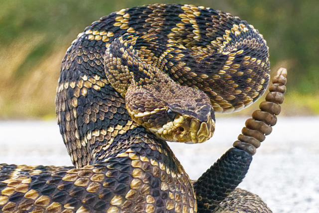
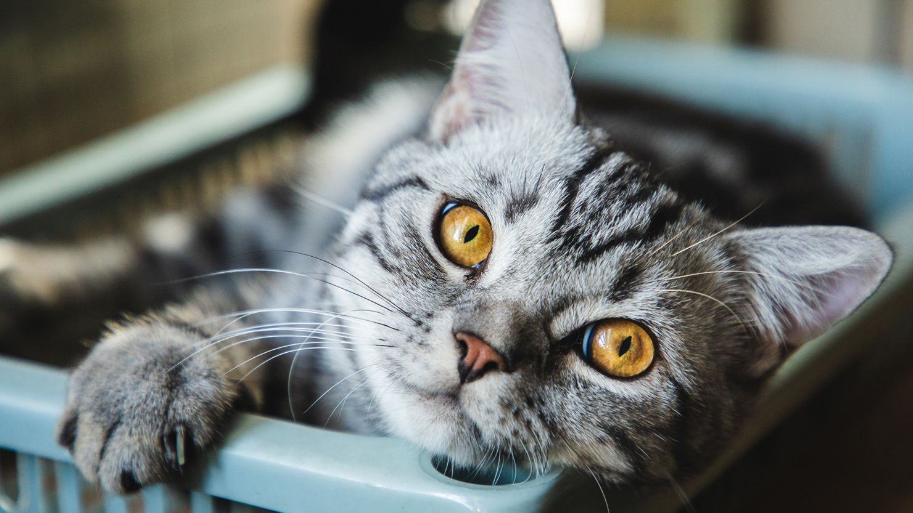

Lion
The lion (Panthera leo) is a large cat of the genus Panthera, native to Africa and India. It has a muscular, broad-chested body; a short, rounded head; round ears; and a hairy tuft at the end of its tail. It is sexually dimorphic; adult male lions are larger than females and have a prominent mane. It is a social species, forming groups called prides. A lion's pride consists of a few adult males, related females, and cubs. Groups of female lions usually hunt together, preying mostly on large ungulates.

Rattle snake
Rattlesnakes are venomous snakes that form the genera Crotalus and Sistrurus of the subfamily Crotalinae (the pit vipers). All rattlesnakes are vipers. Rattlesnakes are predators that live in a wide array of habitats, hunting small animals such as birds and rodents.
Cat
The cat (Felis catus), commonly referred to as the domestic cat or house cat, is the only domesticated species in the family Felidae. Recent advances in archaeology and genetics have shown that the domestication of the cat occurred in the Near East around 7500 BC. It is commonly kept as a house pet and farm cat, but also ranges freely as a feral cat avoiding human contact. It is valued by humans for companionship and its ability to kill vermin.
